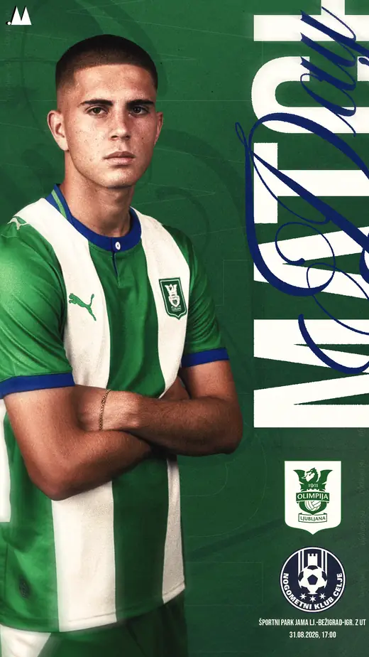
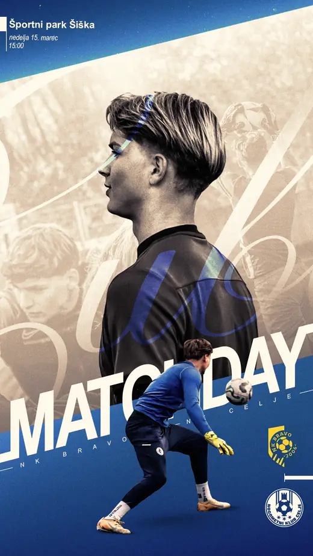
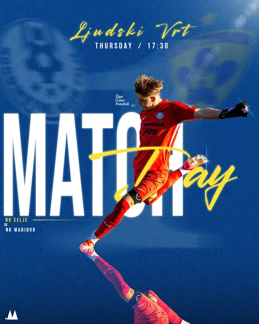
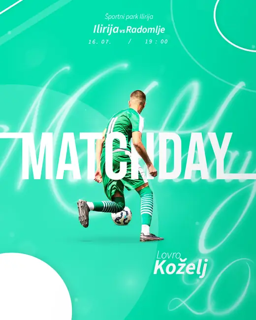
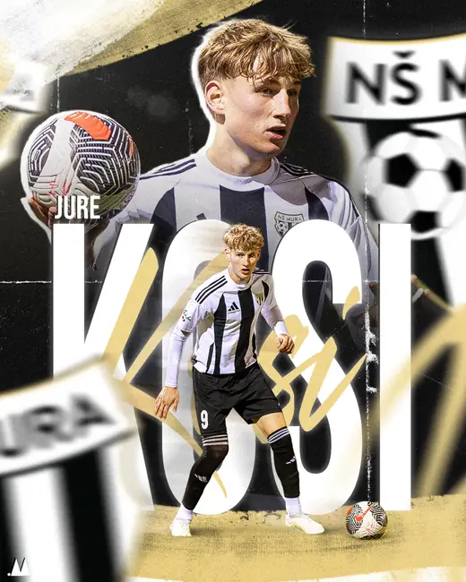
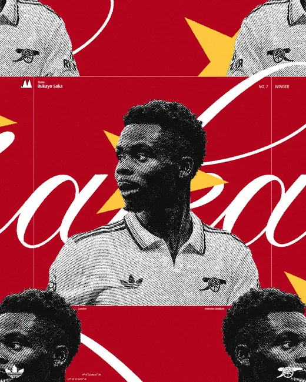
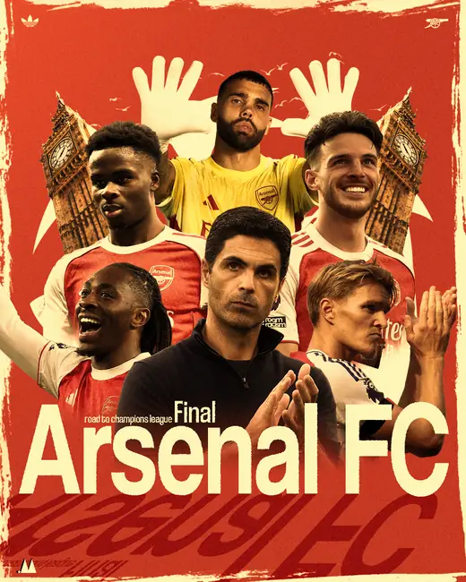

Client work
← madebyM
Commissioned work







Commissioned work







madebyM — Sports Design Studio
1 — Who is responsible
The controller of your personal data is madebyM — Miha Pavlic, Slovenia. For any question about this policy or your data, write to madebymp.studio@gmail.com.
2 — What data we collect
When you submit an inquiry through the contact form, we collect your name, email address, club or company name (if provided), and the content of your message. Nothing else. This site sets no cookies, stores nothing on your device, and runs no analytics or tracking of any kind.
3 — Why we process it, and on what basis
Your data is used solely to answer your inquiry and, where relevant, prepare a quote. The legal bases are your consent (Art. 6(1)(a) GDPR), given via the checkbox on the form, and steps taken at your request before entering into a contract (Art. 6(1)(b) GDPR). We send no unsolicited mail and use your data for no advertising.
4 — Who else processes it
We do not sell, rent, or trade your data. Three service providers necessarily handle it on our behalf:
This means your data is transferred to the United States. You may ask us at any time which safeguards apply to those transfers.
5 — How long we keep it
We keep inquiry data for as long as needed to answer it. If a collaboration follows, we keep it for the duration of that work and for any period Slovenian law requires us to retain business records. Otherwise it is deleted once the inquiry is closed.
6 — Your rights
You have the right to access your data, to have it corrected or erased, to restrict or object to its processing, and to receive it in a portable form. You may withdraw your consent at any time — this does not affect the lawfulness of processing carried out before the withdrawal. To exercise any of these, write to madebymp.studio@gmail.com.
7 — Right to complain
If you believe your data has been handled unlawfully, you may lodge a complaint with the Slovenian supervisory authority, the Information Commissioner of the Republic of Slovenia.
Last updated — August 2026